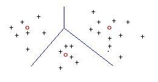
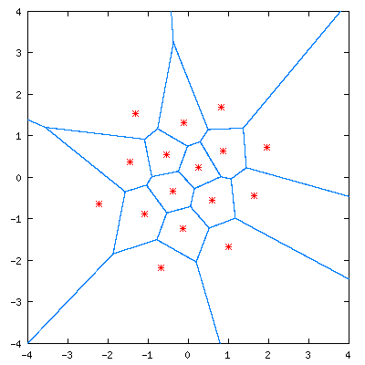
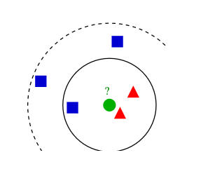

Vektör Nicemleme ve En Yakın Komşu
Bu yazıda öncelikle yapay öğrenme, enformasyon teorisi, sinyal işleme gibi birçok alanda yer bulan vektör nicemlemeye (quantization) bir göz atalım. Ardından da bu bilgiyi en yakın komşu (nearest neighbor) algoritmasına taşıyarak bitirelim.
Vektör nicemleme
Vektör nicemlemeyi basit bir örnekle anlatayım. Bir ressam olduğunuzu düşünün ve elinizde 3 renk boya olsun. Bu boyalar birbirine karışmasın. Ben sizden elinizde olmayan bir renk istiyorum. Ne yaparsınız? Mantıken elinizdeki en uygun rengi seçersiniz. Her ne kadar renkler üç boyuttan oluşsa da biz basitlikten ödün vermemek adına alttaki düzlemi düşünelim.

Resimdeki kırmızı noktalar elimizde hazır bulunan noktalara denk düşerken diğerleri bilmediklerimiz. Uzaklık olarak Öklid uzaklığını aldığımızda mavi çizgiler ayraçlarımız oluyor. Siyah, artı şeklinde verilen bir nokta hangi alana düşüyorsa o alandaki kırmızı yuvarlak nokta ile ifade ediliyor. Buradaki mavi ayraçlar aslında Voronoi hücrelerinin çeperleri. Daha büyük resimde bakacak olsaydık, bunu kolaylıkla görebilecektik:

Tabii ki elimizde 3 yerine ikinci örnekte olduğu gibi 16 renk olsa resmimiz daha çok ayrıntıyı ifade edebilirdi. Şimdi ekranlarımızda olan da bu aslında. Kırmızı, yeşil ve mavi kanallar için 8'er bit kullanılıyor; toplamda 24 bit. Doğadaki bir renk kayıpsız, dijital bir ortamda 24 bitin ifade edebildiği $2^{24}$ renkten hangisine en yakınsa onunla saklanıyor. Bizim gözlerimiz için bu kadar farklı renk yeterli sanıyorum ama dediğim gibi tüm renkleri dijital ortamda ifade edemiyoruz. Yani, analog makine düşkünleri boşuna bu sevdanın peşinde değil.
Şimdi Python ile basit bir örnek yapalım:
from numpy import array, argmin, sqrt, sum
y = array([42.0,168.0])
x = array([[102.0, 203.0],
[132.0, 193.0],
[45.0, 155.0],
[57.0, 173.0]])
fark = x - y
uzaklik = sqrt(sum(fark**2, axis=-1))
enYakin = argmin(uzaklik)
y = x[enYakin, :]
Kısaca üstünden geçelim. İlk satırda aramak istediğimiz değeri, yani y'yi atadık. Sonraki satırlarda gelen x elimizde bulunan değerleri gösteriyor. y'yi dört adet 2B noktadan en yakın olana atayacağız.
6. satırda y'nin her bir noktaya olan uzaklığını hesapladık. Buraya dikkat edelim: x değişkeni 4x2 boyutlu. y ise 2 boyutlu. Böyle durumlarda ikili işlem yaparken Numpy dizilimlerinden küçük olanı sanki öteki boyutta da devam ediyormuşçasına işlem yapılıyor. Yani x'in her satırına denk gelecek şekilde y'nin aynıları işleniyor. MATLAB kullanıcısı iseniz bsxfun ile benzer düşünebilirsiniz.
Sonraki satırda uzaklıkları hesapladık ve ardından en yakın indisi bulup y'yi o indisteki noktaya atadık, yani nicemledik. En yakın indis 2 çıktı. Bu üçüncü sıradaki noktaya denk geldi.
En Yakın Komşu
Şimdi de elinizde birçok üçgen ve kare olduğunu düşünün. Her nesnenin, onu niteleyen iki değeri olsun; buna öznitelik vektörü diyelim. Bu nesnelere de eğitim kümemiz diyelim. Ben size yeni bir nesnenin 2 boyutlu öznitelik vektörünü veriyorum, ama nesnenin üçgen mi yoksa kare mi olduğunu söylemiyorum. Ne yaparsınız? Herhalde elinizdeki nesnelerden en çok hangisine benzediğine bakarsınız, sonra onun şekli ne ise onu söylersiniz. Yani, en yakın komşusu hangi şekildeyse bilinmeyen nesnenin şekli de odur.
Altta örnek bir resim var. Bilinmeyen nesnemiz yeşil ile gösterilen nesne. En yakınındaki şekil üçgen. O halde bu şekil de üçgen olmaya iyi bir aday.

Gelin önceki bölümde yaptığımız örneği bunun için güncelleyelim:
sekiller = ['k', 'k', 'u', 'k'] bilinmeyenSekil = sekiller[enYakin]
Vektör nicemlemenin üstüne en yakın komşu çok kolay oldu.
Buradaki örnekte şirin üçgen ve karelerimizi kullandık ama gerçek hayatta bu birçok çeşitli sınıflamada kullanılabilir. Örneğin optik karakter tanımada sayıları sınıflamak için kullanılabilir. Ya da bir yüzün erkeğe mi yoksa kadına mı ait olduğuna otomatik karar vermek için. Yeter ki eğitim kümeniz çeşitliliği barındırsın ve geniş olsun.
Not etmekte fayda var. Biz burada Öklid uzaklığını kullandık. Başka bir uzaklık birimi kullansaydık kodda güncelleme yapacaktık. Ayrıca Voronoi hücreleri yerine başka hücreler kullanacaktık. Üçgenli resimde de taranan alan dairesel olarak büyümeyecekti.
Bitirmeden önce en yakın komşunun bir çeşitlemesinden de bahsedeyim. En yakın komşuya bakmak yerine en yakın $k$ komşuya da bakabilirdik. Bazı durumlarda en yakındaki $k$ komşunun sadece bize en yakın olanı üçgen, diğerleri kare olabilir. Böyle durumlarda hataya düşmemek için en yakındakine bakmak yerine en yakın $k$ taneye bakarız, en çok hangi şekil varsa onu seçeriz.